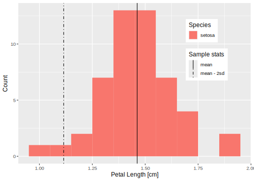
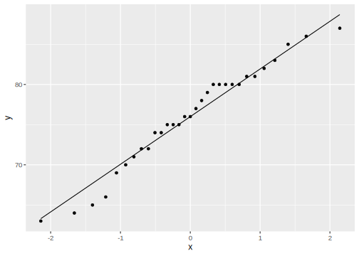

2 Basics of statistical inference
We discuss point estimation, confidence intervals, and hypothesis testing in Sections Section 2.1, Section 2.2, and Section 2.3, respectively. These three tools will form the basis for making inferences about a population.
2.1 Point estimation
Statistical inference seeks to draw conclusions about the characteristics of a population from data. For example, suppose we are botanists interested in the taxonomic classification of iris flowers. Let \mu denote the true average petal length (in cm) of the Iris setosa1 (AKA the bristle-pointed iris). The parameter \mu is a characteristic of the whole population of the setosa species. Before we collect data, the petal lengths of m independent setosa flowers are denoted by rvs X_1, X_2, \dots, X_m. Any function of the X_i’s, such as the sample mean, \overline{X} = \frac{1}{m} \sum_{i=1}^m X_i\,, \tag{2.1} or the sample variance, S^2 = \frac{1}{m-1} \sum_{i=1}^m (X_i - \overline{X})^2 \,, \tag{2.2} is also a rv.
Suppose we actually find and measure the petal length of 50 independent setosa flowers resulting in observations x_1, x_2, \dots, x_{50}; the distribution (counts) of 50 such petal length measurements are displayed in Figure 2.1. The sample mean \overline{x} for petal length can then be used to draw a conclusion about the (true) value of the population mean \mu. Based on the data in Figure 2.1 and using Equation 2.1, the value of the sample mean is \overline{x} = 1.462. The value \overline{x} provides a “best guess” or point estimate for the true value of \mu based on the m=50 samples.
Loading datasets
The datasets package has a variety of datasets that you can play with. Once installed, data sets can be accessed in r by loading library(datasets) and then calling, e.g., data(iris) to see the iris data set. For a full list of available data sets, call library(help = "datasets") from the console.
Note 2.1: Iris Data
The botanist Edgar Anderson’s Iris Data contains 50 obs. of four features (sepal length [cm], sepal width [cm], petal length [cm], and petal width [cm]) for each of three plant species (setosa, virginica, versicolor) for 150 obs. total.
Code
iris |> glimpse()Rows: 150
Columns: 5
$ Sepal.Length <dbl> 5.1, 4.9, 4.7, 4.6, 5.0, 5.4, 4.6, 5.0, 4.4, 4.9, 5.4, 4.8, 4.8, 4.…
$ Sepal.Width <dbl> 3.5, 3.0, 3.2, 3.1, 3.6, 3.9, 3.4, 3.4, 2.9, 3.1, 3.7, 3.4, 3.0, 3.…
$ Petal.Length <dbl> 1.4, 1.4, 1.3, 1.5, 1.4, 1.7, 1.4, 1.5, 1.4, 1.5, 1.5, 1.6, 1.4, 1.…
$ Petal.Width <dbl> 0.2, 0.2, 0.2, 0.2, 0.2, 0.4, 0.3, 0.2, 0.2, 0.1, 0.2, 0.2, 0.1, 0.…
$ Species <fct> setosa, setosa, setosa, setosa, setosa, setosa, setosa, setosa, set…Definition 2.1 (Point estimate) A point estimate of a parameter \theta (recall: a parameter is a fixed, unknown quantity) is a single number that we consider a reasonable value for \theta. Consider \text{iid}\; X_1, X_2, \dots, X_m \sim F(\theta)\,. A point estimator \widehat{\theta}_m of \theta is obtained by selecting a suitable statistic g, \widehat{\theta}_m = g(X_1, \dots, X_m) \,. A point estimate \widehat{\theta}_m can then be computed from the estimator using sample data.
Overloaded notation
The symbol \widehat{\theta}_m (or simply \widehat{\theta} when the sample size m is clear from context) is typically used to denote both the estimator and the point estimate resulting from a given sample.
Best practice for reporting
Writing, e.g., \widehat{\theta} = 42 does not indicate how the point estimate was obtained. Therefore, it is essential to report both the estimator and the resulting point estimate.
Definition 2.1 does not say how to select an appropriate statistic. For the setosa example, the sample mean \overline{X} is suggested as a good estimator of the population mean \mu. That is, \widehat{\mu} = \overline{X} or:
“the point estimator of \mu is the sample mean \overline{X}”.
Here, while \mu and \sigma^2 are fixed quantities representing population characteristics, \overline{X} and S^2 are rvs with sampling distributions. If the population is normally distributed or if the sample is large then the sampling distribution for \overline{X} has a known form: \overline{X} \sim \mathsf{N}(\mu, \sigma^{2} / m) \,, that is, \overline{X} is normal with mean \mu_{\overline{X}} = \mu and variance \sigma_{\overline{X}}^2 = \sigma^{2} / m where m is the sample size and \mu and \sigma are the (typically unknown) population parameters.
Note 2.2: Cherry Tree Data
The Cherry Tree Data contains 31 obs. of three features (diameter, height, and volume).
Code
trees |> glimpse()Rows: 31
Columns: 3
$ Girth <dbl> 8.3, 8.6, 8.8, 10.5, 10.7, 10.8, 11.0, 11.0, 11.1, 11.2, 11.3, 11.4, 11.4…
$ Height <dbl> 70, 65, 63, 72, 81, 83, 66, 75, 80, 75, 79, 76, 76, 69, 75, 74, 85, 86, 7…
$ Volume <dbl> 10.3, 10.3, 10.2, 16.4, 18.8, 19.7, 15.6, 18.2, 22.6, 19.9, 24.2, 21.0, 2…Example 2.1 Let us consider the heights (measured in inches) of 31 black cherry trees (sorted, for your enjoyment) in Table 2.1.
| Height [in] |
|---|
| 63, 64, 65, 66, 69, 70, 71, 72, 72, 74, 74, 75, 75, 75, 76, 76, 77, 78, 79, 80, 80, 80, 80, 80, 81, 81, 82, 83, 85, 86, 87 |

Height variable (feature) in the Cherry Tree Data.
The quantile-quantile plot in Figure 2.2, which compares the quantiles of this data to the quantiles of a normal distribution, is fairly straight. Therefore, we assume that the distribution of black cherry tree heights is (at least approximately) normal with a mean value \mu; i.e., that the population of heights is distributed \mathsf{N}(\mu, \sigma^2), where \mu is a parameter to be estimated and \sigma^2 is unknown. The observations X_1, \dots, X_{31} are then assumed to be a random sample from this normal distribution, \text{iid} \quad X_1, \dots, X_{31} \sim \mathsf{N}(\mu, \sigma^2) \,.
Consider the following three different estimators and the resulting point estimates for \mu based on the 31 samples in Table 2.1.
Estimator (sample mean) \overline{X} as in Equation 2.1 and estimate \overline{x} = \sum x_i / n = 2356 / 31 = 76.
Estimator (average of extreme heights) \widetilde{X} = [\min(X_i) + \max(X_i)]/2 and estimate \widetilde{x} = (63 + 87)/2 = 75.
Estimator (10\% trimmed mean – i.e., in this instance exclude the smallest and largest three values) \overline{X}_{\text{tr}(10)} and estimate \overline{x}_{\text{tr}(10)} = (2356 - 63 - 64 - 65 - 87 - 86 - 85) / 25 = 76.24.
Each estimator above uses a different notion of “centre” for the sample data, i.e., represents a different statistic. An interesting question is: which estimator will tend to produce estimates closest to the true parameter value? Will the estimators work universally well for all distributions?
How do we tell whether a population is normal?
Constructing a normal quantile-quantile plot (or QQ plot) is one way of assessing whether a normality assumption is reasonable. A QQ plot compares the quantiles of the sample data x_i against the theoretical standard normal quantiles, see Figure 2.2. If the sample data is consistent with a sample from a normal distribution, the points will lie in a straight line (more or less). The QQ plot in Figure 2.2 compares quantiles of cherry tree heights from Table 2.1 to normal quantiles. It is produced using the following code.
Code
trees |> ggplot(aes(sample = Height)) + stat_qq() + stat_qq_line()The data trees is piped to the command ggplot. For a QQ plot the key aesthetic element is sample; in this particular instance we set this to Height. The geometry stat_qq() adds the data quantiles plotted versus the normal quantiles. The geometry stat_qq_line() simply adds the fit line.
Example 2.2 Although probably overkill for this problem, the infer package can be used for point estimation using the specify and calculate commands as follows:
Code
trees |>
specify(response = Height) |>
calculate(stat = "mean")Response: Height (numeric)
# A tibble: 1 × 1
stat
<dbl>
1 76The response option specifies the variable of interest, and the stat option can be changed to several quantities of interest.
In addition to reporting a point estimate and its estimator, some indication of its precision should be given. One measure of the precision of an estimate is its standard error.
Definition 2.2 (Standard error) The standard error of an estimator \widehat{\theta} is the standard deviation \sigma_{\widehat{\theta}} = \sqrt{\mathop{\mathrm{Var}}(\widehat{\theta})}\,. Often, the standard error depends on unknown parameters and must also be estimated. The estimated standard error is denoted by \widehat{\sigma}_{\widehat{\theta}} or simply s_{\widehat{\theta}}.
Alternative notation
The standard error is sometimes denoted \mathsf{se}= \mathsf{se}(\widehat{\theta}) and the estimated standard error by \widehat{\mathsf{se}}.
2.2 Confidence intervals
An alternative to reporting a point estimate for a parameter is to report an interval estimate suggesting an entire range of plausible values for the parameter of interest. A confidence interval is an estimate that makes a probability statement about the interval’s degree of reliability. The first step in computing a confidence interval is to select the confidence level \alpha. A popular choice is a 95\% confidence interval which corresponds to level \alpha = 0.05.
Definition 2.3 (Confidence interval) A 100(1-\alpha)\% confidence interval for a parameter \theta is a random interval C_m = (L_m , U_m)\,, where L_m = \ell(X_1, \dots, X_m) and U_m = u(X_1, \dots, X_m) are functions of the data, such that P_{\theta}(L_m < \theta < U_m ) = 1 - \alpha\,, for all \theta \in \Theta.
My favourite interpretation of a confidence interval is due to (Wasserman 2004, p 92):
On day 1, you collect data and construct a 95 percent confidence interval for a parameter \theta_1. On day 2, you collect new data and construct a 95 percent confidence interval for an unrelated parameter \theta_2. On day 3, you collect new data and construct a 95 percent confidence interval for an unrelated parameter \theta_3. You continue this way constructing confidence intervals for a sequence of unrelated parameters \theta_1, \theta_2, \dots Then 95 percent of your intervals will trap the true parameter value. There is no need to introduce the idea of repeating the same experiment over and over.
This interpretation clarifies that a confidence interval is not a probability statement about the parameter \theta. In Definition 2.3, note that \theta is fixed (\theta is not a rv) and the interval C_m is random. After data has been collected and a point estimator has been calculated, the resulting CIs either contain the true parameter value or do not, as illustrated in Figure 2.3.
2.3 Hypothesis testing
Section 2.1 and Section 2.2 reviewed how to estimate a parameter by a single number (point estimate) or range of plausible values (confidence interval), respectively. Next, we discuss methods for determining which of two contradictory claims, or hypotheses, about a parameter is correct.
Definition 2.4 (Null and alternative) The null hypothesis, denoted by H_0, is a claim we initially assume to be true by default. The alternative hypothesis, denoted by H_a, is an assertion contradictory to H_0.
Typically, we shall consider a hypothesis test concerning a parameter \theta \in \Theta, i.e., taking values in a parameter space \Theta. The statistical hypotheses are contradictory in that H_0 and H_a divide \Theta into two disjoint sets. For example, for a statistical inference regarding the equality of a parameter \theta with a fixed quantity \theta_0, the null and alternative hypotheses will usually take one of the following forms in Table 2.2.
| Null hypothesis | Alternative hypothesis | Test form |
|---|---|---|
| H_0 : \theta = \theta_0 | H_a : \theta \neq \theta_0 | two-sided test |
| H_0 : \theta \leq \theta_0 | H_a : \theta > \theta_0 | one-sided test |
| H_0 : \theta \geq \theta_0 | H_a : \theta < \theta_0 | one-sided test |
These hypothesis pairs are associated with either a one-sided or two-sided test; what this means will become apparent in the sequel. The value \theta_0, called the null value, separates the alternative from the null.
Definition 2.5 (Hypothesis test) A hypothesis test asks if the available data provides sufficient evidence to reject H_0. If the observations disagree with H_0, we reject the null hypothesis. If the sample evidence does not strongly contradict H_0, then we continue to believe H_0. The two possible conclusions of a hypothesis test are: reject H_0 or fail to reject H_0.
“Fail to reject” versus “accept”
We comment that fail to reject H_0 is sometimes phrased as retain H_0 or (perhaps less accurately) accept H_0.
Why not just accept the null and move on with our lives?
Well, if I search the Highlands for the Scottish wildcat (endangered) and fail to find any, does that prove they do not exist?
A procedure for carrying out a hypothesis test is based on specifying two additional items: a test statistic and a corresponding rejection region. A test statistic T is a function of the sample data (like an estimator). The decision to reject or fail to reject H_0 will involve computing the test statistic. The rejection region R is the collection of values of the test statistic for which H_0 is to be rejected in favour of the alternative, e.g., R = \left\{ x : T(x) > c \right\}\,, where c is referred to as a critical value. If a given sample falls in the rejection region, we reject H_0. If X \in R (e.g., the calculated test statistic exceeds some critical value), we reject H_0. The alternative is that X \not\in R and we fail to reject the null in this case.
Two types of errors can be made when carrying out a hypothesis test. The basis for choosing a rejection region involves considering these errors.
Definition 2.6 (Error types) A type I error occurs if H_0 is rejected when H_0 is actually true. A type II error is made if we fail to reject H_0 when H_0 is actually false.
If a test’s maximal type I error is fixed at an acceptably small value, then the type II error decreases as the sample size increases. In particular, a conclusion is reached in a hypothesis test by selecting a significance level \alpha for the test linked to the maximal type I error rate. Typically, \alpha = 0.10, 0.05, 0.01, or 0.001 is selected for the significance level.
Definition 2.7 (P-value) A P-value is the probability, calculated assuming H_0 is true, of obtaining a value of the test statistic at least as contradictory to H_0 as the value calculated from the sample data.
Smaller P-values indicate stronger evidence against H_0 in favor of H_a. If P \leq \alpha then we reject H_0 at significance level \alpha. If P \geq \alpha we fail to reject H_0 at significance level \alpha.
What a P-value isn’t…
The P-value is a probability calculated assuming that H_0 is true. However, the P-value is not the probability that:
- H_0 is TRUE,
- H_0 is FALSE, or
- a wrong conclusion is reached.
Proposition 2.1 The hypothesis test procedure that \begin{cases} \text{rejects}\; H_0 & \text{if}\; P \leq \alpha,\\ \text{fails to reject}\; H_0 & \text{otherwise}, \end{cases} has P(\text{type I error}) = \alpha.
Example 2.3 Churchill claims that he will receive half the votes for the House of Commons seat for the constituency of Dundee.2 If we do not believe Churchill’s claim and are doubtful of his popularity, we would seek to test an alternative hypothesis. How should we write down our research hypotheses?
If we let p be the fraction of the population voting for Churchill, then we have the null hypothesis, H_0 : p = 0.5 \,, and the alternative hypothesis (we believe Churchill is less popular than he claims), H_a : p < 0.5 \,. Support for the alternative hypothesis is obtained by showing a lack of support for its converse hypothesis (the null hypothesis).
Example 2.4 Suppose that m = 15 voters are selected from Dundee and X, the number favouring Churchill, is recorded. Based on observing X, we construct a rejection region R = \{x : x \leq k \}. If k is small compared to m, then the rejection region would provide strong evidence to reject H_0. How should one choose the rejection region?
Assume now that m = 15 voters are polled and that we select k = 2 to have a rejection region R = \{ x \leq 2 \}. For this choice of k, the rejection region R provides strong support to reject H_0. Assuming the null hypothesis is true, we expect approximately half of the 15 voters (ca. 7) to vote for Churchill. Observing x = 0, x = 1 or x = 2 (the values that would place us in the rejection region) would provide strong evidence against H_0.
We can calculate the probability of a type I error. From the definition of type I error, \begin{aligned} \alpha &= P(\text{type I error})\\ &= P(\text{rejecting } H_0 \text{ when } H_0 \text{ is true})\\ &= P(X \in R \text{ when } H_0 \text{ is true})\\ &= P(X \leq 2 \text{ when } p = 0.5) \,. \end{aligned} Since X \sim \mathsf{Binom}(15, 0.50), we calculate that \alpha = 0.00369. Thus, for this particular choice of rejection region R, the risk of concluding that Churchill will lose if, in fact, he is the winner is tiny.
For this rejection region, how good is the test at protecting us from type II errors, i.e., concluding that Churchill is the winner if, in fact, he will lose? Suppose that Churchill receives 25% of the votes (p=0.25). The probability of type II error \beta is, \begin{aligned} \beta &= P(\text{type II error})\\ &= P(\text{fail to reject } H_0 \text{ when } H_0 \text{ false})\\ &= P(X \not\in R \text{ when } H_0 \text{ false})\\ &= P(X > 2 \text{ when } p = 0.3)\,. \end{aligned} For X \sim \mathsf{Binom}(15, 0.25), we calculate \beta = 0.764. If we use R = \{ x \leq 2\}, then our test will lead us to conclude that Churchill is the winner with a probability of 0.764 even if p is as low as 0.25!
If we repeat these calculations for R^* = \{x \leq 5\}, we find \alpha = 0.151 versus \beta = 0.148, even if p is as low as 0.25, which is a much better balance between type I and type II errors.
What if the sample size is close to the population size?
In Example 2.4, X is a binomial random variable because it can be modelled as m independent Bernoulli trails each with probability p of success (i.e., votes for Churchill) as long as the sample size m is much smaller than the population of Dundee. If we had the means to canvas nearly the whole population, what goes wrong conceptually?
Elements of a statistical test
A statistical test is based on a null hypothesis (H_0) and an alternative hypothesis (H_a).
An appropriate test statistic T is computed. Then either:
- T is compared to a rejection region (based on significance level \alpha)
OR
- P-value (based on T) is compare to the significance level \alpha.
More about the Iris setosa here [https://www.wikiwand.com/en/Iris_setosa].↩︎
Sir Winston Churchill was Member of Parliament for Dundee from 1908–1922 [https://www.wikiwand.com/en/Winston_Churchill].↩︎